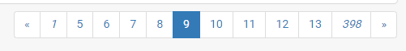
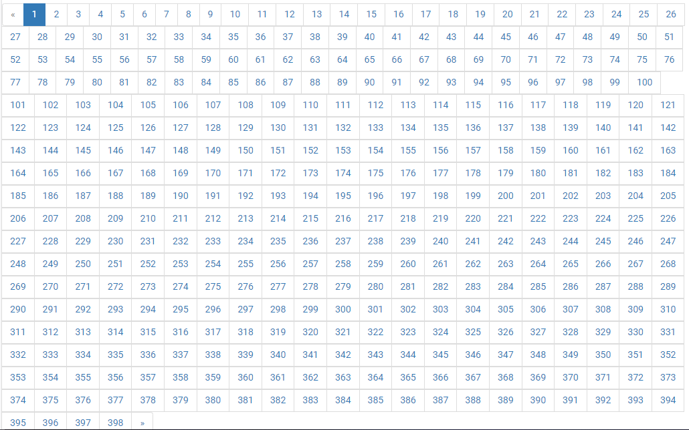

Giới thiệu
Django hỗ trợ sẵn một vài class để giúp cho việc sử dụng và quản lý việc phân trang dữ liệu được hiệu quả và đơn giản. Các class này được chứa trong django/core/paginator.py.

Nạp vào bộ phân trang một danh sách các phần tử với đối số là số phần tử muốn có trong một trang, bộ phân trang sẽ trả về các phương thức để lấy dữ liệu ra theo từng trang.
Dưới đây là 1 đoạn code sử dụng Paginator từ trang chủ tài liệu của Django minh họa phương thức nạp và gọi dữ liệu:
>>> from django.core.paginator import Paginator
>>> objects = ['john', 'paul', 'george', 'ringo']
>>> p = Paginator(objects, 2)
>>> p.count
4
>>> p.num_pages
2
>>> p.page_range
range(1, 3)
>>> page1 = p.page(1)
>>> page1
<Page 1 of 2>
>>> page1.object_list
['john', 'paul']
>>> page2 = p.page(2)
>>> page2.object_list
['george', 'ringo']
>>> page2.has_next()
False
>>> page2.has_previous()
True
>>> page2.has_other_pages()
True
>>> page2.next_page_number()
Traceback (most recent call last):
...
EmptyPage: That page contains no results
>>> page2.previous_page_number()
1
>>> page2.start_index() # The 1-based index of the first item on this page
3
>>> page2.end_index() # The 1-based index of the last item on this page
4
>>> p.page(0)
Traceback (most recent call last):
...
EmptyPage: That page number is less than 1
>>> p.page(3)
Traceback (most recent call last):
...
EmptyPage: That page contains no results
Phần tiếp theo mình sẽ hướng dẫn mọi người sử dụng Paginator trong một project django thực tế.
Sử dụng
Ở ví dụ này mình minh họa việc sử dụng Paginator để phân trang cho một danh sách các báo cáo, dữ liệu được lưu trữ là danh sách các đơn hàng. Mặc định số lượng dữ liệu cho 1 trang là 20.
# Import loader and render engine
from django.template import loader
from django.shortcuts import render
from django.http import HttpResponse
# Model
from apiServer.models import Order
# Paginator
from django.core.paginator import Paginator, EmptyPage, PageNotAnInteger
def report(request):
template = loader.get_template('report.html')
orders = Order.objects.all()
# Paging
paginator = Paginator(orders, 20)
page = request.GET.get('page', 1)
try:
orders_paged = paginator.page(page)
except PageNotAnInteger:
orders_paged = paginator.page(1)
except EmptyPage:
orders_paged = paginator.page(paginator.num_pages)
context = {"orders": orders_paged}
return HttpResponse(template.render(context, request))
Đầu tiên, dữ liệu được nạp vào Paginator:
paginator = Paginator(orders, 20)
Giả sử dữ liệu của chúng ta đang có 7954 bản ghi, chia cho 20 bản ghi mỗi trang = 397.7, như vậy số trang mà ta sẽ có là 397 trang có 20 bản ghi và 1 trang cuối có 7 bản ghi.
>>> paginator.count
7954
>>> paginator.num_pages
398
Tiếp theo, để xác định trang nào đang được người dùng gọi, ta kiểm tra giá trị page được lấy từ method GET:
page = request.GET.get('page', 1)
Giá trị 1 là giá trị mặc định được trả về trong trường hợp page không tồn tại, nếu bạn chưa hiểu rõ lắm về GET và POST method, có thể xem kỹ hơn ở đây: HTTP Request Methods. Về cơ bản, khi người dùng gọi 1 trang báo cáo, đường dẫn được yêu cầu sẽ có dạng:
http://yourdomain.com/quantri/baocao?page=2
Phần thông tin ?page=2 tương đương với việc đặt biến page có giá trị bằng 2 trong yêu cầu gửi đến máy chủ. Xét các trường hợp người dùng gọi một trang không tồn tại hoặc giá trị page không hợp lệ:
try:
orders_paged = paginator.page(page)
except PageNotAnInteger: # Giá trị không hợp lệ
orders_paged = paginator.page(1) # --> trả về trang đầu tiên
except EmptyPage: # Trang không tồn tại
orders_paged = paginator.page(paginator.num_pages) # --> trả về trang cuối
Phần sau của đoạn code mình sẽ không đi vào chi tiết vì nó liên quan đến việc render trang web của Django. Như vậy là phần code trong view đã đủ, tiếp theo là phần code trong file report.html
<table class="table table-bordered">
<thead>
<tr>
<th>Store</th>
<th>Customer</th>
<th>Price</th>
</tr>
</thead>
<tbody>
{% for order in orders %}
<tr>
<td>{{ order.store }}</td>
<td>{{ order.customer }}</td>
<td>{{ order.price }}</td>
</tr>
{% endfor %}
</tbody>
</table>
{% if orders.has_other_pages %}
<ul class="pagination">
{% if orders.has_previous %}
<li><a href="?page={{ orders.previous_page_number }}">«</a></li>
{% else %}
<li class="disabled"><span>«</span></li>
{% endif %}
{% for i in orders.paginator.page_range %}
{% if orders.number == i %}
<li class="active"><span>{{ i }} <span class="sr-only">(current)</span></span></li>
{% else %}
<li><a href="?page={{ i }}">{{ i }}</a></li>
{% endif %}
{% endfor %}
{% if orders.has_next %}
<li><a href="?page={{ orders.next_page_number }}">»</a></li>
{% else %}
<li class="disabled"><span>»</span></li>
{% endif %}
</ul>
{% endif %}
Phần template html được viết dựa trên Bootstrap 3, giao diện được dựng lên bạn sẽ thấy như sau:

Không được đẹp cho lắm vì toàn bộ số trang được liệt kê ra. Tiếp theo chúng ta sẽ chỉnh sửa một chút để giao diện được đẹp hơn.
Mình chỉ muốn in 5 trang gần với trang hiện tại nhất, vòng lặp for được thay đổi như sau:
{% for i in orders.paginator.page_range %}
{% if i > orders.number|add:"-5" %}
{% if i < orders.number|add:"5" %}
{% if orders.number == i %}
<li class="active"><span>{{ i }} <span class="sr-only">(current)</span></span></li>
{% else %}
<li><a href="?page={{ i }}">{{ i }}</a></li>
{% endif %}
{% endif %}
{% endif %}
{% endfor %}
Trong trường hợp đang ở trang 6 trở đi, trang 1 sẽ được thêm vào để giúp cho người dùng dễ dàng về trang đầu.
{% if orders.number > 5 %}
<li><a href="?page=1"><i>1</i></a></li>
{% endif %}
Trong trường hợp cách trang cuối nhiều hơn 5 trang, trang cuối sẽ được thêm vào để giúp người dùng dễ dàng nhảy đến trang cuối.
{% if orders.number < orders.paginator.num_pages|add:"-5" %}
<li><a href="?page={{ orders.paginator.num_pages }}"><i>{{ orders.paginator.num_pages }}</i></a></li>
{% endif %}
Code cuối cùng chúng ta có:
<nav aria-label="Page navigation example">
<ul class="pagination pull-right">
{% if orders.has_previous %}
<li><a href="?page={{ orders.previous_page_number }}">«</a></li>
{% else %}
<li class="disabled"><span>«</span></li>
{% endif %}
{% if orders.number > 5 %}
<li><a href="?page=1"><i>1</i></a></li>
{% endif %}
{% for i in orders.paginator.page_range %}
{% if i > orders.number|add:"-5" %}
{% if i < orders.number|add:"5" %}
{% if orders.number == i %}
<li class="active"><span>{{ i }} <span class="sr-only">(current)</span></span></li>
{% else %}
<li><a href="?page={{ i }}">{{ i }}</a></li>
{% endif %}
{% endif %}
{% endif %}
{% endfor %}
{% if orders.number < orders.paginator.num_pages|add:"-5" %}
<li><a href="?page={{ orders.paginator.num_pages }}"><i>{{ orders.paginator.num_pages }}</i></a></li>
{% endif %}
{% if orders.has_next %}
<li><a href="?page={{ orders.next_page_number }}">»</a></li>
{% else %}
<li class="disabled"><span>»</span></li>
{% endif %}
</ul>
</nav>
Kết quả cuối cùng:
Đây là cách đơn giản nhất mình tìm được để giải quyết vấn đề, nếu các bạn có hướng giải quyết tốt hơn, rất mong nhận được góp ý. Cảm ơn các bạn đã theo dõi bài viết.